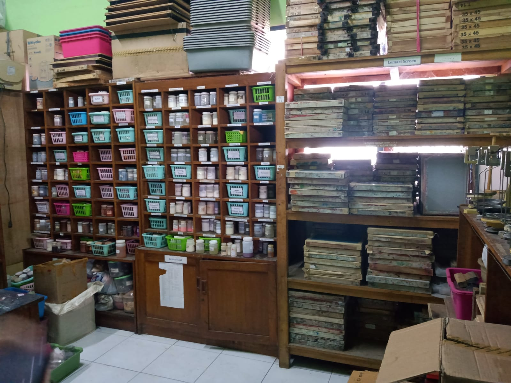
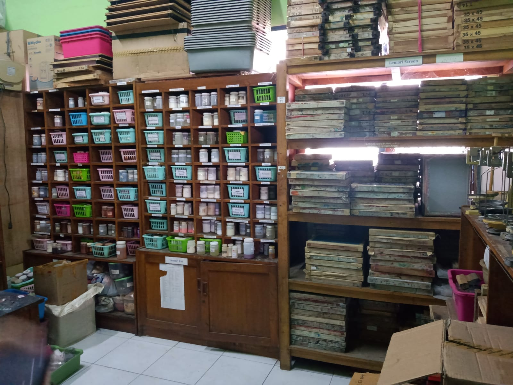

About Me
Jurusan Tekstile
Jurusan Tekstil telah ada sejak awal SMKN 1 Katapang berdiri Tahun 1999 dengan nama awal SMKN 4 Soreang. Bersama dengan jurusan Teknik Elektro dan Jurusan Mesin Perkakas, Tekstil menjadi Jurusan awal di SMKN 4 Soreang. Akhir Tahun 2000 keluar Surat Keputusan Ditpsmk Jakarta Nomor: 217/O/2000, tanggal 17 Nopember 2000, tentang pembukaan Sekolah yang menetapkan nama sekolah yang dulu bernama SMKN 4 Soreang secara resmi adalah SMKN 1 Katapang Kabupaten Bandung. Sejak tahun 1999 sampai sekarang siswa–siswa SMKN 1 Katapang banyak meraih prestasi terutama untuk perlombaan pramuka, baik tingkat Kabupaten Bandung maupun Provinsi Jawa Barat. Selain itu siswa-siswi SMKN 1 Katapang juga sering mewakili Kabupaten Bandung dalam LKS tingkat Provinsi dan Nasional.
 
